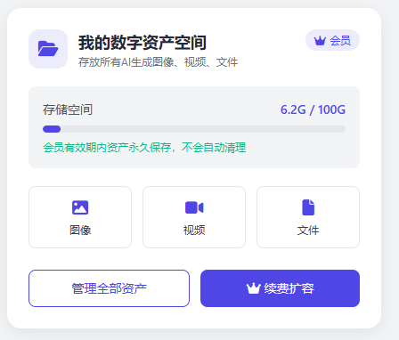
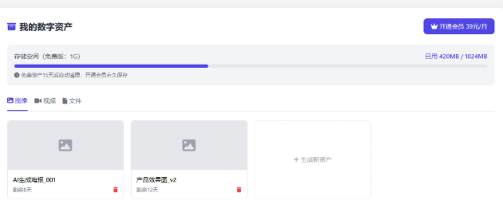
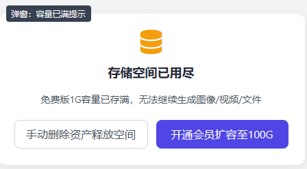
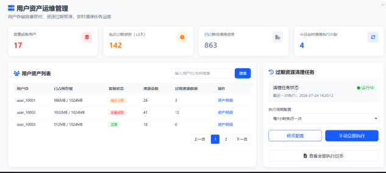

从一次模型生成到可治理数字资产：三套服务的对象存储架构实践
涉及仓库：
new-api、llm-router、amax-router
摘要
AI 应用接入图片、视频和文件生成后，很快会遇到一个比“把文件传到对象存储”更复杂的问题：生成结果来自不同协议，部分是 Base64，部分是短期 URL，视频还是异步任务；用户需要预览、下载和删除，平台需要配额、过期清理和审计；对象存储与关系数据库又无法放进同一个本地事务。
本文复盘一套跨三个服务落地的数字资产系统。它以 new-api 作为资产主数据和对象存储入口，以 llm-router 负责生成结果识别、容量预检与归档编排，以 amax-router 承载用户资产管理体验。系统最终覆盖腾讯云 COS 主存储、MinIO 兼容回退、1 GiB 用户配额、15 天保留期、短期签名 URL、幂等归档、补偿删除、定时清理和运维审计。
文中的“OSS”泛指 Object Storage Service，而不是特指某一家云厂商。当前主路径使用腾讯云 COS，并保留 MinIO 回退能力；数据库字段 oss_object_key 为兼容既有命名而保留。
截图均为脱敏设计/验收稿，仅用于说明信息架构与交互思路，不代表最终上线权益或配置。图中数据均为示例数据；部署域名、Bucket、密钥、内网地址和真实用户信息未在本文出现。
目录
- 为什么这不是一个普通上传功能
- 三仓分层架构
- 一次生成请求的完整数据流
- 存储层：先抽象能力，再接入 COS
- 主数据：对象不是资产
- COS 与数据库的一致性
- 预检、并发与最终容量校验
- 异步视频与首帧资产
- COS 未配置时的 MinIO 回退
- 用户侧资产管理体验
- 运维侧资产治理
- 可观测性与安全边界
- 测试策略
- 复盘与可复用经验
一、为什么这不是一个普通上传功能
最初的问题看起来很简单：把 AI 生成的文件存下来。但只要把链路放到真实系统里，就会出现一组相互约束的问题：
- 图片接口可能返回 Base64，也可能返回上游临时 URL。
- 视频生成通常先返回任务 ID，完成后才能拿到真正的媒体地址。
- 视频首帧既是生成输入，也是用户图片资产，会先消耗容量。
- 上游临时 URL 随时可能失效，不能作为长期资产地址。
- 浏览器对跨域下载有限制，
<a download>对其他域名通常不生效。 - COS 对象与数据库元数据无法使用同一个 ACID 事务。
- 生成前检查容量仍然会遇到并发竞争，不能替代最终写入校验。
- 服务重试不能制造重复文件、重复计费容量或错误的成功消息。
- 自动清理既要避免多实例重复执行，又要保留每个资产的审计记录。
因此，真正需要建设的不是“上传接口”，而是一套从生成、归档、访问到治理的资产生命周期。
二、三仓分层架构
三个仓库按职责拆分，避免让任何一层同时承担生成协议、资产主数据和 UI 状态。
| 服务 | 技术栈 | 主要职责 |
|---|---|---|
amax-router |
Next.js / React / TypeScript | 发起生成、生成前交互预检、资产列表、预览、下载、批量删除和容量提示 |
llm-router |
FastAPI / Python / httpx | 统一图片、视频、文件生成协议，提取结果，归档首帧与生成结果，处理 COS/MinIO 模式 |
new-api |
Go / Gin / GORM | 用户身份、资产主数据、COS 适配、配额、签名 URL、生命周期、清理调度和运维后台 |
拖动画布查看 · Ctrl/⌘ + 滚轮缩放 · 按 0 重置
这里最重要的边界是：
new-api是数字资产的唯一事实来源，llm-router不维护第二套资产表。- COS 密钥只存在于
new-api部署环境，不下发给生成服务或浏览器。 llm-router只使用原始用户 Bearer Token 调用内部配额与归档接口。amax-router不信任客户端传入的用户 ID，所有资产请求都依赖服务端鉴权上下文。
三、一次生成请求的完整数据流
以“用户提交一个带首帧的图生视频请求”为例，完整链路如下：
拖动画布查看 · Ctrl/⌘ + 滚轮缩放 · 按 0 重置
这条链路有两个刻意设计的“闸门”：
- 生成前预检：空间已满时，不调用昂贵的模型上游。
- 归档成功闸门：上游生成成功但归档失败时，整体返回失败，不把临时 URL 伪装成可长期使用的成功结果。
预检是体验优化，最终事务校验才是容量正确性的权威判断。两者不能互相替代。
四、存储层：先抽象能力，再接入 COS
new-api 没有把业务逻辑直接绑定到 COS SDK，而是先定义最小对象存储接口：
type ObjectStorage interface {
Put(ctx context.Context, objectKey string, body io.Reader, size int64, contentType string) error
Delete(ctx context.Context, objectKey string) error
Head(ctx context.Context, objectKey string) (*Object, error)
List(ctx context.Context, options ListOptions) (*ListResult, error)
GetAccessURL(ctx context.Context, objectKey string, options AccessURLOptions) (*AccessURL, error)
}
这样做有三个收益：
- 生命周期服务只依赖对象存储能力，不依赖具体云厂商。
- 单元测试可以使用内存 Fake，覆盖补偿、重试和异常状态。
- COS 与 MinIO 的差异被限制在适配层和生成编排层，不污染资产模型。
对象 Key 永远由服务端生成，调用方不能指定完整路径。普通归档采用按用户和月份分区的 Key：
users/{user_id}/{yyyy}/{MM}/{uuid}.{ext}
内部生成归档则使用稳定幂等 Key：
users/{user_id}/internal/{uuid-v5(source, request_id, file_index)}
前者便于运维扫描和用户隔离，后者保证网络重试不会重复上传同一生成结果。
公有访问与签名访问
COS 适配器支持公有 URL 和预签名 URL 两种访问模式。系统只在数据库中保存 Object Key，不保存会过期的签名 URL。每次预览或下载时，由服务端根据当前权限重新生成访问地址。
预览使用 inline 语义；下载使用 Content-Disposition: attachment。这一点很关键：跨域场景下，浏览器可能忽略 <a download>，只有对象存储响应头才能稳定触发保存。中文文件名同时输出 ASCII fallback 和 RFC 5987 filename*，避免下载文件名乱码。
五、主数据：对象不是资产，元数据才让它可治理
单纯把文件放进 Bucket，无法回答“这个文件属于谁、占了多少容量、何时到期、是否已删除”。因此 new-api 增加 user_assets 主表，核心字段包括：
| 字段 | 作用 |
|---|---|
user_id |
资产归属与权限隔离 |
file_name / mime_type / file_type |
展示、预览和协议判断 |
file_size |
配额聚合的事实来源 |
oss_object_key |
对象存储中的稳定标识 |
asset_status |
正常、用户删除、过期清理 |
create_time / expires_at |
生命周期和清理依据 |
系统没有额外维护一张“用户用量表”。容量直接从 asset_status = normal 的资产聚合得出，避免资产状态和冗余计数发生漂移。
默认规则为：
- 免费容量：1 GiB。
- 容量预警：使用量达到 80%。
- 保留期限：15 天。
- 临期窗口：72 小时。
- 状态：正常、用户删除、过期清理。
历史资产按 500 条一批回填 expires_at。读取时还提供 create_time + 15 天 的兼容计算，保证滚动迁移期间没有过期判断空窗。
六、最难的问题之一：COS 与数据库的一致性
对象存储和关系数据库不能加入同一个本地事务，因此实现采用“确定顺序 + 幂等 + 补偿”的最终一致性方案。
归档路径
校验用户与文件
-> 生成服务端 Object Key
-> 上传对象存储
-> 数据库事务内锁定用户并最终校验容量
-> 写入 user_assets
-> 返回资产结果
如果对象上传成功但数据库写入失败，服务会启动最长 30 秒的独立补偿上下文删除对象。补偿上下文使用 context.WithoutCancel，即使原始 HTTP 请求已经断开，也不会立即放弃清理。
如果补偿删除仍然失败，对象会成为潜在孤儿。系统提供只读孤儿扫描：分页遍历 users/ 前缀，对照数据库中的 Object Key，输出孤儿数量和占用空间，而不是无边界扫描整个 Bucket 或自动删除。
删除路径
创建 processing 删除日志
-> 删除对象存储文件
-> 将资产状态更新为 deleted / expired_cleaned
-> 完成删除日志并记录释放容量
对象已经不存在时按幂等成功处理。COS 删除失败时不会提前把元数据标记为已释放；数据库更新冲突时会重新读取状态，判断是成功、跳过还是需要重试。
拖动画布查看 · Ctrl/⌘ + 滚轮缩放 · 按 0 重置
七、最难的问题之二：预检、并发与最终容量校验
生成前检查容量可以节省一次模型调用，但存在典型的 TOCTOU（检查时与使用时不一致）问题：两个请求可能同时看到“还有空间”，然后一起生成并归档。
解决方式是在最终写入元数据的数据库事务中锁定用户行：
- MySQL/PostgreSQL 使用
SELECT ... FOR UPDATE。 - SQLite 使用同事务内的写操作获取串行化写锁。
- 锁内重新聚合正常资产容量，再决定是否写入。
配额规则允许“最后一个文件”让容量越过上限，但一旦当前用量已经达到 1 GiB，后续归档会被拒绝。这种规则比“预估生成文件大小”更稳定，因为模型生成前通常不知道最终字节数。
幂等重试必须先于容量计算处理。同一个 source + request_id + file_index 重试时返回已有资产，不会再次计入容量；如果相同幂等 Key 对应不同文件元数据，则返回冲突，而不是静默覆盖。
八、最难的问题之三：异步视频与首帧资产
视频链路同时包含输入资产和输出资产：
- 首帧可能是 Base64、Data URI 或 HTTP URL。
- 首帧先作为图片资产归档，替换请求中的原始内容。
- 首帧已经占用容量，因此提交视频任务前必须再次预检。
- 视频任务只有进入
COMPLETED/SUCCESS/SUCCEEDED等终态后才能归档。 - 结果协议可能同时出现代理下载地址和协议内视频直链，应优先使用真正的媒体直链。
- 归档成功后，需要替换响应中的所有临时 URL，避免某个嵌套字段继续泄漏短期地址。
对于 i2v、r2v 和 t2v 模型，媒体语义也不同：首帧、参考图和纯文本请求不能统一写成同一种 media.type。这类协议差异必须在生成适配层解决，不能推给对象存储层。
九、COS 未配置时为什么要明确回退 MinIO
迁移期间并非所有部署都立即具备 COS 配置。直接让所有生成失败会影响既有环境，而无条件回退又可能掩盖错误配置。
最终策略是：
new-api的内部配额响应增加cos_configured。- Secret ID 或 Secret Key 只配置了一半，也视为“意图使用 COS”，启动时应明确失败，不能静默回退。
- 只有两项凭证都未配置时，
llm-router才切换为 MinIO 兼容模式。 - MinIO 模式不应用数字资产配额，文件也不进入
user_assets资产库。 - 存储模式在进程内缓存，避免每次生成重复探测。
- 日志明确输出本次使用
cos还是minio，但不记录密钥或完整签名 URL。
这不是“双写”，而是互斥的运行模式。主数据只有在 COS 数字资产模式下建立，避免同一文件在两套系统里出现两个权威版本。
十、用户侧：把存储规则翻译成可理解的交互
底层规则只有被用户看见并能够采取行动，才算完整产品能力。amax-router 增加了资产 API 客户端、个人资产页、对话侧栏概览和满容量拦截。

个人资产页按图像、视频和文件分类，展示容量、创建时间和剩余有效期，支持预览、下载、单删与批量删除。

容量满时，生成入口会先拦截请求，并把用户引导到资产清理，而不是等模型调用后再显示一个模糊错误。

前端还有几处容易被忽略的工程细节：
- 服务端
USER_ASSET_CAPACITY_FULL和USER_ASSET_ARCHIVE_FAILED使用稳定错误码，不依赖错误文案判断。 - 资产变化通过统一事件刷新侧栏概览和资产页，避免多个组件维护不同缓存。
- 批量删除允许部分成功，失败项保留选中，便于重试。
- 对话中的 COS 图片只有 URL、没有资产 ID，因此下载时先从 URL 提取 Object Key，再由
new-api做归属校验并生成下载签名。 - MinIO 地址走兼容下载路径，COS 地址走服务端签名路径。
- 域名级
userAssetsEnabled控制入口展示，不参与后端归档或存储模式判断。
十一、运维侧：从“能存”走向“可治理”
new-api 增加了独立的资产运维面板，用于观察容量风险、临期资产和清理任务。

运维能力包括：
- 超容量用户数。
- 72 小时内到期资产数。
- 已到期待清理资产数。
- 当日定时清理执行次数。
- 用户容量列表和资产明细。
- 1/6/12/24 小时清理周期配置。
- 手动立即清理。
- 按操作 ID、用户、删除类型和结果筛选执行日志。
清理调度器使用数据库租约而不是进程内互斥：多实例竞争同一个任务时，只有获得租约的实例执行；运行中持续续约，租约丢失则取消任务。清理每批读取 100 条，不使用 OFFSET，避免状态更新后分页漂移。定时/手动清理最多重试三次，并恢复超过 10 分钟仍处于 processing 的中断日志。
每个进入删除流程的资产都有独立审计记录，包含操作 ID、触发类型、操作者、文件快照、执行次数、存储是否清除、元数据是否更新、释放字节数和错误摘要。即使源资产状态变化，日志仍然可读。
十二、可观测性与安全边界
跨服务链路最怕“某一层说成功，另一层却没有文件”。为此，日志围绕稳定关联键组织：
request_id：一次生成或归档请求。file_index：多图、多文件结果中的位置。asset_id：new-api中的资产主键。operation_id：一次批量删除或清理任务。user_id：来自鉴权上下文，不来自客户端表单。
安全上遵循以下边界：
- COS Secret 只通过部署环境注入。
- 内部归档接口复用 New-API Token 鉴权，并使用 Token 对应用户，忽略 multipart 中伪造的
user_id。 - 用户 API 不返回其他用户数据，也不暴露不必要的内部清理信息。
- 日志不记录文件正文、完整 Token、密钥或完整签名查询参数。
- 下载、删除和 Object Key 反查都重新校验资源归属。
- 待归档 URL 只接受 HTTP(S)，下载大小和请求超时均有限制，HTTP 客户端关闭环境代理继承，避免 Bearer Token 意外发往工作站代理。
十三、测试策略
这套功能跨 Go、Python 和 TypeScript 三种技术栈，测试重点不是 UI 快照数量，而是跨边界契约。
| 层级 | 关键覆盖 |
|---|---|
| COS 适配器 | 配置校验、Put/Delete/Head/List、404 幂等、签名有效期、Content-Disposition |
| 生命周期服务 | 幂等归档、补偿删除、用户隔离、孤儿扫描、过期访问、部分删除失败 |
| 配额 | 80%/100% 边界、最后一个文件越界、并发归档、重试不重复计量 |
| 清理调度 | 租约竞争、续约、崩溃恢复、周期更新、手动触发、失败重试 |
llm-router |
Base64/URL 归档、终态判断、上游不被误调用、首帧二次预检、临时 URL 不泄漏 |
amax-router |
三类资产、预览下载、跨域下载、满容量拦截、批量删除与响应式布局 |
Python 测试全部使用 MockTransport/Fake Client，不连接真实 New-API、COS、MinIO 或模型上游。Go 服务通过存储 Fake 和 SQLite 测试业务事务，同时保持实现兼容 SQLite、MySQL 和 PostgreSQL。
十四、复盘：这套架构真正解决了什么
最终交付的不是一个 COS SDK 封装，而是一条可验证的业务闭环：
生成前知道能不能存
-> 生成后确保真的存下
-> 返回可以长期治理的资产
-> 用户能够预览、下载和释放空间
-> 平台能够统计、清理、恢复和审计
这次实现最值得复用的经验有五点：
- 把对象存储视为基础设施，把资产元数据视为业务主数据。
- 预检只负责节省成本，最终事务校验负责正确性。
- 跨系统一致性依靠稳定幂等键、明确顺序和可恢复补偿，而不是假装存在分布式事务。
- 上游生成成功不等于用户资产成功，响应语义必须以归档完成为准。
- 生命周期从第一天就要包含访问、删除、过期、清理和审计，否则“先存起来”最终会变成不可治理的数据堆积。
当 AI 应用开始批量产生图片、视频和文件时，对象存储只是起点。真正决定系统能否长期运行的，是身份、配额、一致性、生命周期和可观测性是否被作为同一个架构问题一起解决。